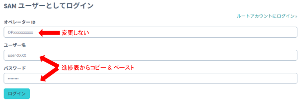
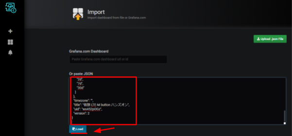
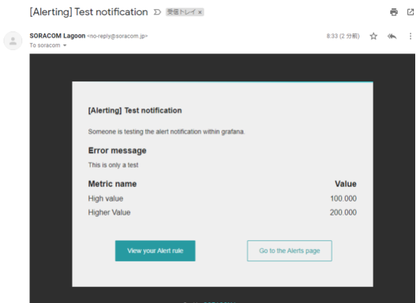
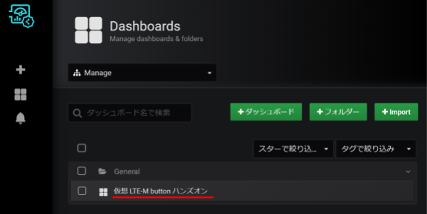
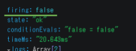

レシピ難易度：★☆☆☆☆
ソラコムより販売されている SORACOM LTE-M Button for Enterprise をバーチャルに体験するハンズオンです。Web 上に用意した仮想的な SORACOM LTE-M Button for Enterprise (以後、仮想 LTE-M ボタン) をクリックして、SORACOM Harvest Data へのデータ格納や SORACOM Lagoon での可視化を体験します。SORACOM サービスを利用するためのアカウントは貸し出されます。
本ハンズオンを行うのに必要な時間、費用
本ハンズオンは以下の通りです。
- 必要な時間: 30分
- 費用: 0円
このコンテンツの進め方
ページの内容を読み、また作業を行ったら右下の［Next］を押して次のステップへ進みます。また、［Back］を使って戻ったり、左のナビゲーションメニューでもページの移動が可能です。
左上の［×］を押してコンテンツを終了することができます。また、ページを開きなおすことで再開できます。ページのアドレスはブラウザの［履歴］メニューを利用してください。
本レシピを行うためには以下のものをご用意ください。
ハードウェア
品名 | 数量 | 価格 | 購入先 | 備考 |
パソコン | 1 | ― | ― |
|
運営より連携された「ハンズオン情報シート」に、以下の情報が記載されています。
- 受講者番号 (ご自身の番号と合っているか確認してください)
- デバイス体験ページの URL
- SORACOM Harvest Data を確認するためのユーザー名・パスワード
- SORACOM Lagoon で可視化するためのメールアドレス・パスワード・デバイス名
これらの情報が記載されていることを確認して、デバイス体験ページの URL にアクセスします。
デバイス体験ページへアクセス
デバイス体験ページより、データを SORACOM へ送信します。ハンズオン情報シートに記載されたデバイス体験ページの URL へアクセスしてください。

データの送信
実際の SORACOM LTE-M Button for Enterprise は以下 3 種類のデータを SORACOM へ送信できます。当ハンズオンではデバイス体験ページより仮想 LTE-M ボタンの「シングルクリック」・「ダブルクリック」・「ロングクリック」をシミュレーションできます。
種別 | 説明 |
シングルクリック | 短く(1.2秒未満) 1回押す |
ダブルクリック | 2秒以内にシングルクリックを2回行う |
ロングクリック | ロング 1.2秒以上押し続ける。 |
デバイス体験ページより、SORACOM へいずれかのクリック情報を送信しましょう。
「データが送信されました」と表示されれば成功です。
以上で、データの送信ができました。
SORACOM Harvest Data でデータを確認
クリック情報を送信したら、「送信したデータを確認する」メニューより SORACOM サービスへ遷移します。まずは、SORACOM Harvest Data にて送信したデータを確認しましょう。デバイス体験ページの「SORACOM Harvest Data」をクリックすると、SORACOM ユーザコンソールが開きます。
SORACOM ユーザコンソールへログイン
ハンズオン情報シートに記載されたユーザー名とパスワードを入力してください。オペレーター ID に入力されている値は変更しません。

［自動更新］を ON にする
ログインに成功すると、SORACOM Harvest Data の画面へ遷移します。遷移しない場合は、再度デバイス体験ページの「SORACOM Harvest Data」をクリックしてください。
[自動更新] を ON にすることで、デバイス体験ページから送信されたデータが随時反映されます。

送信されたデータの確認
SORACOM Harvest Data では送信されたデータを簡易的に確認できます。グラフ左上のアイコンより可視化の形式を折れ線・棒グラフと変更したり、右上より表示するデータを変更してみましょう。可視化の形式を棒グラフ () とします。また、"●batteryLevel" をクリックして、表示するデータを clickType のみとすると以下の画像のようにクリックタイプだけを表示できます。デバイス体験ページより何度かデータを送信してみましょう。
次に、下へスクロールするとデータが JSON 形式で格納されていることが確認できます。[ダウンロード] > [グラフ用データをダウンロード (CSV形式)] よりデータのダウンロードをしてみましょう。データが CSV 形式で取得できることがわかります。
以上で簡単なデータの確認が出来ました。デバイス体験ページよりクリックを何度か繰り返して、データが SORACOM Harvest Data へ格納されていることを確認してください。
SORACOM Harvest Data へ格納したデータを、よりカスタマイズしたダッシュボードで可視化したい場合は SORACOM Lagoon を利用します。デバイス体験ページより、[SORACOM Lagoon] をクリックして SORACOM Lagoon のログインページへ遷移しましょう。
SORACOM Lagoon へログイン
SORACOM Lagoon ログインページでは、ハンズオン情報シートに記載されたメールアドレスとパスワードを入力してください。
ダッシュボードの作成
当ハンズオンではダッシュボードのサンプルとしてテンプレートを用意しています。用意されたテンプレートを SORACOM Lagoon へインポートし、可視化のイメージをつかんでみましょう。
インポートするテンプレートをコピー
再度デバイス体験ページへ移動し、[送信したデータを確認する] > [SORACOM Lagoon ダッシュボードのテンプレート] > [クリップボードへコピーする] をクリックします。
SORACOM Lagoon へインポート
左上の + アイコンにマウスカーソルをかざし、[インポート] をクリックします。
[Or paste JSON] (JSON を貼り付ける) の欄へ、先ほどコピーしたテンプレートをペーストします (Windows の場合 Ctrl + V、Mac の場合 Command + V)。その後、[Load] をクリックします。

確認画面が表示されるので、[Import] をクリックします。
以下のようにダッシュボードが表示されたらインポート成功です。最新のクリックタイプを文字で表示したり、表や棒グラフ形式でクリックタイプの履歴を表示したりしています。
体験ページよりデータを送信し、SORACOM Lagoon 上でどのように可視化されるかを体験ください。ダッシュボードへの反映には 1 ～ 2 分かかります。
(応用) ダッシュボードのカスタマイズ
当ハンズオンでは、SORACOM Lagoon のイメージをすぐにつかんでいただくためにサンプルのダッシュボードを用意しました。もしさらに詳しく SORACOM Lagoon を試したい場合は、「パネルの作成」や「アラートの作成」を参照してダッシュボードをカスタマイズしてみましょう。ここまででハンズオンを終了とする場合は、「後片付けと注意事項」に進んでください。
SORACOM Lagoon のパネルを自分で作成してみましょう。ここではクリックタイプを可視化するグラフパネルを作成します。SORACOM Lagoon のダッシュボードにて右上の [パネルを追加] アイコンをクリックし、[Graph] を選択します。
Panel Title 右側の▼アイコンをクリックし、[編集] を選択するとパネルを編集できます。
デバイスの選択
メトリックタブより、ハンズオン情報シートに記載のある "device-" から始まるデバイス名を選択し、右のドロップダウンからは "clickType" を選択します。これにより、デバイス体験ページから送信したクリックイベントを可視化できます。
棒グラフで可視化する
[表示]タブより、描画モードに「棒」を指定して見やすくします。
ダッシュボードの保存
右上の保存ボタン をクリックし、表示されたダイアログでダッシュボード名を入力した上で［保存］をクリックします。
をクリックし、表示されたダイアログでダッシュボード名を入力した上で［保存］をクリックします。
ダッシュボードの更新時は名前を変更内容を記載 (任意) し、保存してください。

新規にダッシュボードを保存する場合はダッシュボード名を設定します。
項目 | 設定値 | 備考 |
名前 |
| 任意の名前が利用できます。 |
これでパネルの作成が出来ました。グラフパネルではほかにも様々なオプションを用意しており、さらにグラフパネル以外にも豊富な種類のパネルを用意されていますので、ぜひ活用してみて下さい。
(参考ドキュメント : SORACOM Lagoon を利用して様々なパネルを作成する)
SORACOM Lagoon のグラフパネルでは条件に応じてアラートを発報できます。発報したアラートの通知先としてメールや Slack などが設定できます。ここではメールでのアラートを作成しましょう。
通知チャンネルの設定
アラート作成アイコンにカーソルを乗せると表示される「作成」メニューから［通知チャンネル］をクリックし、その後表示される［チャンネルを追加］をクリックします。


通知のテスト
「新しい通知チャンネルを追加」では、以下のように設定します。
項目 | 設定値 | 備考 |
名前 |
| 任意の名前が利用できます。 |
タイプ | Email となっていれば次に進みます。 | |
Email addresses | （通知の送信先 Email アドレス） | 通知の送信先アドレスを指定します。 |

ここまで入力が終わったら［送信テスト］をクリックします。「Email addresses」に記載したアドレスへ、以下のようなメールが届いていることを確認します。

テストの結果が良好であれば、SORACOM Lagoon の画面に戻り［保存］をクリックします。
アラートの設定
作成したダッシュボードを開きます。ダッシュボードアイコンにカーソルを乗せると表示される「管理」メニューから表示されたダッシュボードをクリックします。

「(応用) パネルの作成」で作成したグラフパネルに対して "Panel Title" >［編集］をクリックします。

アラート条件の設定
"アラート" タブをクリックした後、［アラートの作成］をクリックします。

「アラート設定」を以下の通りに設定します。
項目 | 設定値 | 備考 |
名前 |
| 任意の名前が利用できます。 |
評価間隔 |
| 閾値の監視間隔です。 |
条件 (WHEN) |
| "avg()" をクリックすると一覧に現れます。 |
条件 (OF) |
| "5m" をクリックすると一覧が現れますが、 |
条件 (IS ABOVE) |
| "IS ABOVE" はそれ自体の条件の "IS BELOW" |
データが無いか全ての値が Null の時 |
| 評価間隔内でデータが無い、即ちボタンの動作が |
実行エラーまたはタイムアウトの時 |
| 何らかの理由で評価に失敗した時の設定です。 |
ここまで入力が完了できたら［ルールを確認］をクリックします。この時点でボタンからのデータが過去90秒以内に発生していなければ firing: false 即ち、アラートは発生せず、正常な設定となります。

次に、デバイス体験ページにてロングクリックを発生させます。30秒～60秒経過した後に、再度［ルールを確認］をクリックすると firing: true 即ち、アラートが発生した状態となります。（この時点では通知の送信先を設定していないため、アラート発生の有無を確認するのみとなります。）

そこから30秒～60秒経過した後に、再度［ルールを確認］をクリックすると firing: false に戻ることが確認できるでしょう。
［ルールを確認］ボタンは何度でも押すことが可能ですので、何度か試してみることをお勧めいたします。
通知の設定
［通知］をクリックした後、 "送り先" の追加  をクリックします。一覧の中から通知チャンネルで作成した通知先をクリックします。
をクリックします。一覧の中から通知チャンネルで作成した通知先をクリックします。
本レシピでは "ロングクリックの通知" という名称で作ったので、それをクリックします。
メッセージの設定
"メッセージ" にアラート発生時のメッセージを入力します。今回は ClickType が 2.5 よりも大きいとき、すなわちロングクリック (ClickType = 3) の時にアラートを送信するため、その旨を入力しています。
設定が完了したら右上の保存ボタンをクリックし、［保存］をクリックします。
以上で全ての設定が終了しました。画面右上のダッシュボードに戻る ボタンをクリックし、ダッシュボードに戻ります。
ボタンをクリックし、ダッシュボードに戻ります。
アラートのメールを確認する
実際に通知が来るか試してみましょう。デバイス体験ページよりロングクリックを実行すると、以下のようなメールが届きます。
また、次にシングルクリック・またはダブルクリックを送信すると [OK] メールが送信されます。
なお、データがダッシュボードへ反映されるには 60 秒程度かかります。そのためデバイス体験ページからボタンクリックの送信は 60 秒以上の間隔を空けてください。実際に SORACOM Lagoon を利用された際にはよりダッシュボードへの反映までの時間が短くなるプランも用意しています。
また、連続してロングクリックが送信されても新たな通知は来ないようになっています。これは、頻繁な通知による「通知爆弾」を避けるための仕組みです。
以上で、アラートの作成は終了です。
当ハンズオンではアカウントを貸し出しているため、費用は発生しません。
なお、貸し出しアカウント、仮想デバイス、および作成した SORACOM Lagoon のダッシュボードは約 24 時間で利用できなくなります。
(参考) ユーザーコンソールからのログアウト方法
SORACOM ユーザーコンソールからのログアウトは、右上のユーザー名が表示されているボタンをクリックすると現れるログアウトを使用します。

(参考) SORACOM Lagoon からのログアウト方法
SORACOM Lagoon 空のログアウトには、左下のアイコンにマウスカーソルをかざして表示されるサインアウトをクリックします。
当ハンズオンでは Web 上に用意した仮想的な SORACOM LTE-M Button for Enterpriseをクリックして、SORACOM Harvest Data へのデータ格納や SORACOM Lagoon での可視化を体験しました。
SORACOM LTE-M Button for Enterprise の実デバイスは、SORACOM IoT Store よりお求めいただけます。また利用方法について具体的な手順が記載された IoT レシピの用意もありますので是非取り組んでみてください。
(参考) 【商品ページ】 SORACOM LTE-M Button for Enterprise
(参考) 【IoT DIY レシピ】SORACOM LTE-M Buttonでできる、現在地を知らせるボタン
今回のハンズオンでは SORACOM Harvest Data や SORACOM Lagoon の使い勝手を体験いただきましたが、実際のデバイスはさらに以下 3 つのような特長があります。
[1] 電池駆動のシンプルなセルラーデバイスとしての特長をもつ
単４電池２本で駆動するため、小型で持ち運びも可能、さらに電源ケーブルが不要です。また、設定はクラウド側にオフロードしているためデバイス側へのプログラム書き込みは一切不要です。さらにセルラーデバイスのため Wi-Fi の設定が不要で屋外でも使用できるという特長があります。
[2] 簡易位置測位機能が利用できる
SORACOM LTE-M Button for Enterprise が内蔵する plan-KM1 の SIM は簡易位置測位機能を利用できます。当機能はエリア情報をベースに位置情報を取得する仕組みとなるため、GPS による位置測位に比べると大まかな範囲での取得となりますが、GPS モジュールが不要となるため低価格化、低消費電力化が可能で、加えて衛星が見えない屋内やビルの谷間での位置情報の取得も可能という特徴もあります。IoT レシピで実際に利用していますので、是非お試しください。
(参考) 【IoT DIY レシピ】SORACOM LTE-M Buttonでできる、現在地を知らせるボタン
[3] SORACOM Harvest Data だけでなく、他のサービスも利用できる
SORACOM Harvest Data へデータを格納するだけでなく、クラウドサービスや FaaS と連携するような SORACOM サービスも利用できます。以下のデザインパターンも参考にしてください。